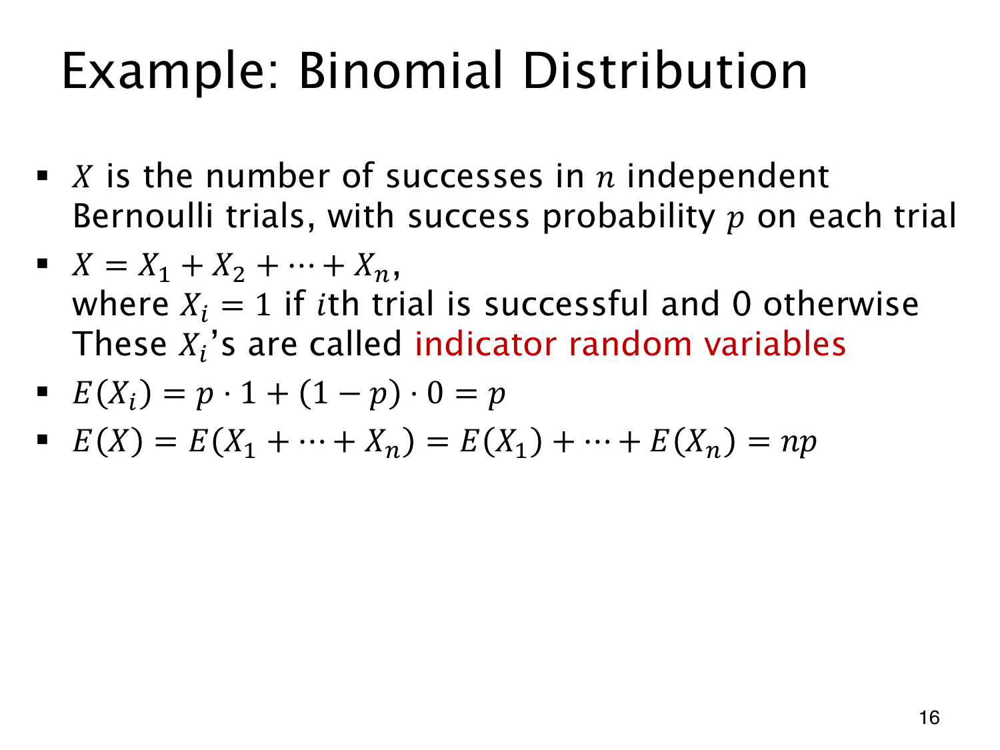

L1.11 · 第 16 页讲解原文
查看这一页课件

用指示变量数成功次数
给第 i 次试验定义指示随机变量（indicator random variable）Xi：成功取 1，失败取 0。总成功次数 X 就满足
X=X1+X2+⋯+Xn.
这是每个实际结果上都成立的计数，每次成功恰加 1。若每次成功概率相同为 p，则
E(Xi)=1⋅p+0⋅(1−p)=p,
所以
E(X)=i=1∑nE(Xi)=np.
不用先列总次数的二项分布，就得到了它的期望。
课件的试验独立且同成功概率，因此 X 确实服从二项分布。刚才的期望计算却只用了线性性：即使各次相关，只要边际成功概率仍为 p，仍有 E(X)=np，但完整分布未必是二项分布。
若第 i 次成功概率改为 pi，同样的指示变量分解便给出 E(X)=∑ipi。